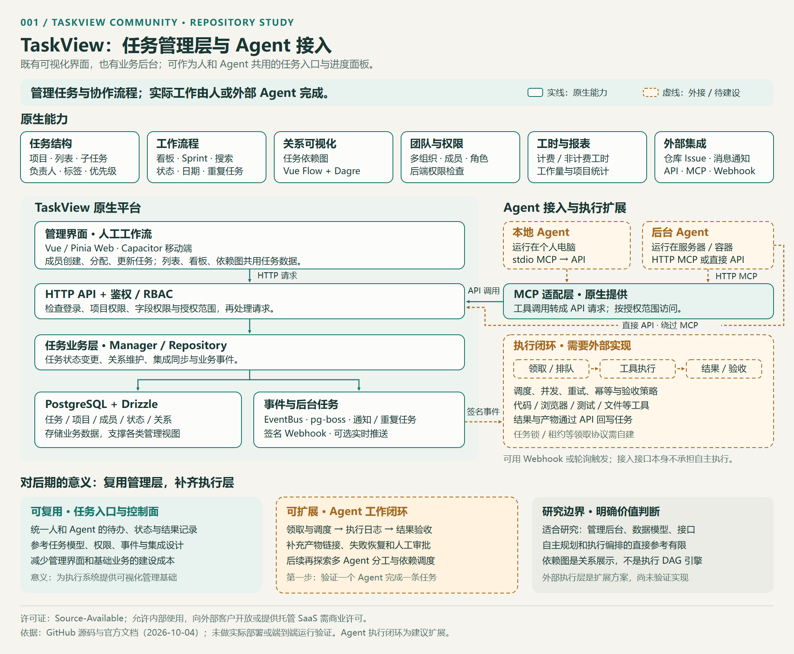
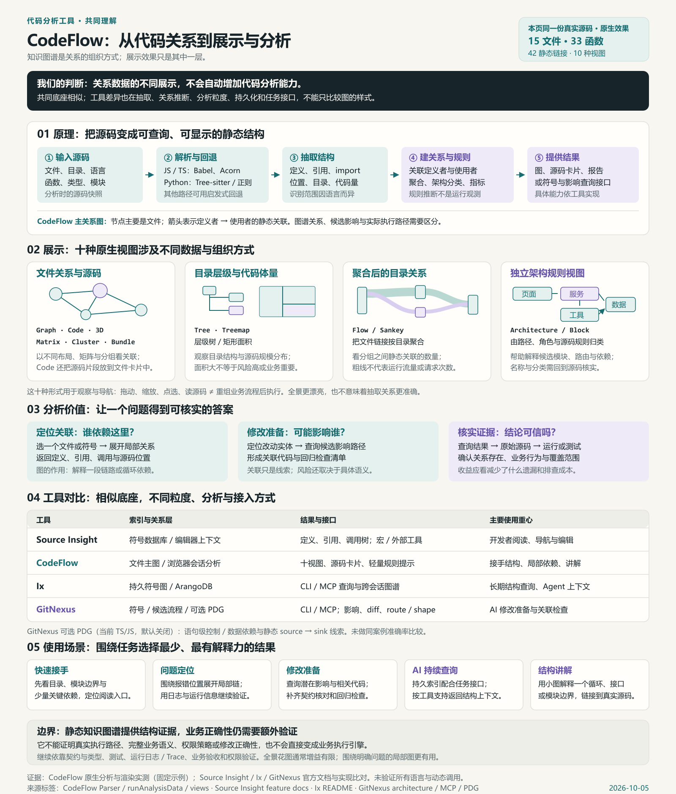
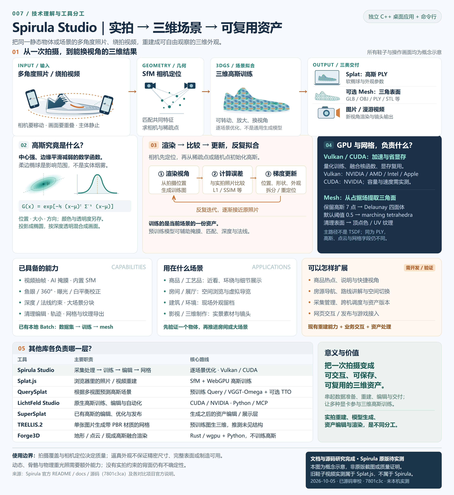

TaskView Community
项目摘要
可自托管的项目与任务管理平台，提供看板、子任务、依赖图、权限与工时报表。底层采用 Vue、Express 和 PostgreSQL，通过 API、MCP、Webhook 连接人和外部 Agent；可复用为任务入口与进度管理层，自动执行和验收需另行构建。
记录值得学习的开源项目与产品，从源码阅读、产品观察到本地复现，沉淀截图、结论与可体验的 Web Demo。
查看研究总仓库 ↗
项目摘要
可自托管的项目与任务管理平台，提供看板、子任务、依赖图、权限与工时报表。底层采用 Vue、Express 和 PostgreSQL，通过 API、MCP、Webhook 连接人和外部 Agent；可复用为任务入口与进度管理层，自动执行和验收需另行构建。

项目摘要
无需后端的代码结构浏览与轻量静态分析工具：输入 GitHub 仓库、PR 或本地源码，另支持 Markdown 笔记；经 Babel/Acorn、Tree-sitter 与正则抽取定义和引用，推断文件关系，输出十种交互视图、源码卡片、指标、潜在影响与可导出报告。可通过 CLI 监听、Card 指标历史和无界面 JSON 接入外部流程。研究页以汇总图引导，包含真实源码原生演示及 Source Insight、Ix、GitNexus 对比；静态线索需经源码和测试核实。

项目摘要
从 Defilade 公开中景展示出发，研究场景布局、模型比例、材质光影、镜头与动态反馈如何共同形成玩家体感。原创 Three.js 样板完成三场景三风格比较、建筑植被道路车辆细化和人物专项，保留 V1/V2 完整存档与同机位对照。以含原游戏官方画面和实际样板的总览图引导，整理探索过程、效果差距、技术原理、美术选型与团队沟通场景，以及比例、配色、镜头和模块规则的复用价值；区分官方参考、实时结果、AI 概念和待验证判断。扩展方向覆盖风格方案库、场景组合、营地状态，以及故事、玩家行动与游戏系统；人物研究暂停，候选方向尚未实现，当前成果用于研究与原型，不等于完整游戏或正式资产。

项目摘要
Claude Code 的社区学习资料、配置模板与工作流参考实现：通过项目记忆、Commands / Skills、Subagents、Hooks 与 MCP 组织重复任务和多步骤开发。完整模块总图覆盖 47 项功能主题，按知识与上下文、执行与协作、配置权限与扩展、会话体验、审查与持续工作、外部系统、本库示例和资料导航整理为 8 组 63 个条目，每项说明技术机制与使用入口。适用于代码研究与审查、复杂功能开发、团队交接、资料维护和外部工具接入；价值是沉淀知识、复用流程、减少重复说明与遗漏、明确交接和验收依据。实际推理和工具执行由 Claude Code 与外部服务提供，收益需结合适配、维护和执行成本验证。

项目摘要
把同一静态对象的多角度照片、绕拍视频，经抽帧、掩膜、SfM 相机求解和逐场景高斯优化，变成可自由观察、保存和编辑的三维高斯资产，并提取带纹理网格、渲染图片与漫游视频。独立 C++ 桌面与 CLI 整合重建、批处理、编辑和导出；Vulkan/CUDA、训练量化与 GPU 内存优化支撑计算。中文总图和源码研究解释高斯、可微渲染、密度控制与占据场网格提取，覆盖商品/文物展示、空间导览、内容制作及采集管理、跨机调度、质量验收等扩展，并对比 Splat.js、QuerySplat、LichtFeld、SuperSplat、TRELLIS.2、Forge3D 的职责。实拍资产可复用，外观逼真不保证测量或制造精度；资料与源码已审校，Spirula 本机运行与性能待验证。